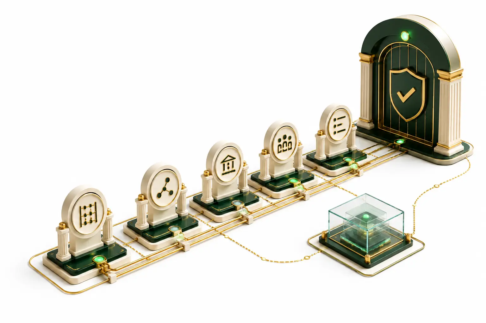

Built for UK payroll
Compliance and control built into the payroll process.
Oceans Pay brings UK payroll requirements, validation, access controls and traceability into one connected platform — helping payroll teams manage sensitive payroll activity with greater visibility and control.

Built into the workflow
Compliance shouldn't be something you check at the end.
UK payroll involves rules, thresholds, submissions and statutory responsibilities throughout every pay cycle.
Oceans Pay is designed to keep those requirements connected to the payroll process — from calculation and validation through to submission and reporting.
Built around UK payroll
The rules behind every pay run matter.
Oceans Pay supports the core requirements involved in processing UK payroll.
PAYE & National Insurance
Apply employee tax and National Insurance information as part of payroll calculation and processing.
Real Time Information
Manage the payroll information and workflow required for FPS and EPS submissions to HMRC.
Statutory Payments
Support statutory payroll requirements as part of the employee pay record.
Workplace Pensions
Bring pension and auto-enrolment activity into the wider payroll process.
Payroll Records
Keep relevant employee and payroll information connected throughout the payroll lifecycle.
Legislative Updates
Maintain payroll rules and statutory parameters in line with supported UK payroll requirements as legislation changes.
Control before completion
Give payroll teams another opportunity to spot what needs attention.
Compliance is not simply whether a calculation can be completed.
Oceans Pay brings structured validation and exception visibility into the workflow so users can review important payroll information before progressing.
The platform helps surface what needs attention. Payroll professionals remain in control of the decision.
- Payroll validation checks
- Missing or inconsistent information
- Exceptions requiring review
- Unusual payroll activity
- Period-on-period changes
- Controlled review before completion
Roles & Permissions
Control who can see and do what.
Sensitive payroll data needs controlled access.
Not every user needs access to every company, employee or payroll action.
Oceans Pay allows organisations to structure platform access around the responsibilities of the people using it.
Role-Based Access
Give users access appropriate to their payroll responsibilities.
Company-Level Control
Manage access across relevant employers and payrolls in multi-company environments.
Controlled Actions
Restrict sensitive payroll activity to authorised users.
Review & Approval
Support clearer separation of responsibilities where payroll requires additional oversight.
Audit & Traceability
Payroll activity should leave a clear trail.
Oceans Pay keeps relevant user and payroll activity connected to the platform so teams have greater visibility over what changed and how payroll progressed.
Better visibility when you need to investigate, review or evidence payroll activity.
User activity
Payroll changes
Review and approval activity
Processing history
Submission activity
Relevant record updates
Security by design
Protecting payroll data.
Payroll contains some of the most sensitive information an organisation holds.
Oceans Pay is designed around controlled access and secure handling of payroll information throughout the platform.
Secure Access
Protect platform access through authenticated user accounts and appropriate security controls.
Encryption
Protect sensitive information during transmission and storage using appropriate encryption standards.
Access Control
Limit payroll information and functionality according to authorised user permissions.
Platform Monitoring
Maintain operational and security monitoring around the systems supporting the platform.
Data Protection
Handle personal information within a structured data-protection framework designed around applicable UK requirements.
Data protection
Payroll data deserves deliberate handling.
Oceans Pay is designed to support responsible handling of personal payroll information and the obligations organisations have when processing that data.
The wider data-protection approach should cover areas including:
Data access
Control who can access personal payroll information.
Data retention
Manage information in line with operational and legal requirements.
Data rights
Support appropriate processes around individual data rights.
Data processing
Clearly define how payroll information is processed and protected.
Third parties
Apply appropriate controls where other service providers are involved in processing data.
Trust through transparency
Security claims should be more than website badges.
Oceans Pay separates confirmed facts from formal work in progress and commitments that are still planned or awaiting technical validation.
The latest position is published in the Trust & Security centre.
HMRC Recognition
Oceans Pay is progressing through the HMRC payroll software recognition process.
Cyber Essentials
Certification status will be published once formally confirmed for Ocean Across.
ISO/IEC 27001
Certification is planned as part of the Ocean Across security roadmap. No certification is currently claimed.
Security Testing
Independent penetration testing will form part of the production assurance programme.
Encryption & Data Protection
Exact technical standards will be published after architecture validation.
Platform Availability
The contractual availability target will be published only after engineering and commercial confirmation.
Built for trust. Built for payroll.
Running payroll requires confidence in both the calculations and the environment surrounding them.
Oceans Pay brings together the essential controls so payroll teams can operate from one controlled environment.
UK Payroll Rules
Validation
Controlled Access
Auditability
Data Protection
Platform Security
See the controls in action
See how compliance and control fit into the payroll workflow.
Explore how Oceans Pay manages validation, permissions, payroll activity and UK payroll requirements across the platform.